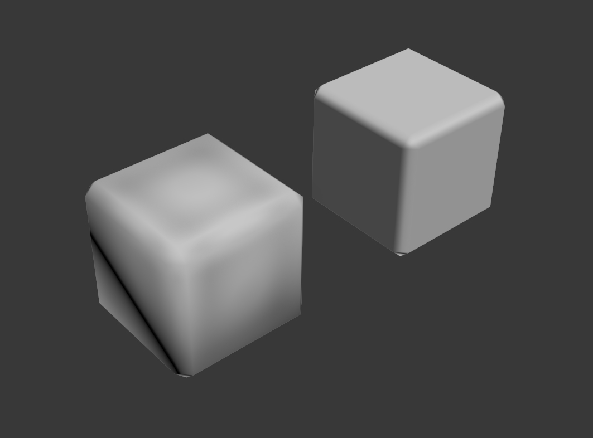
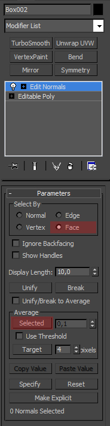
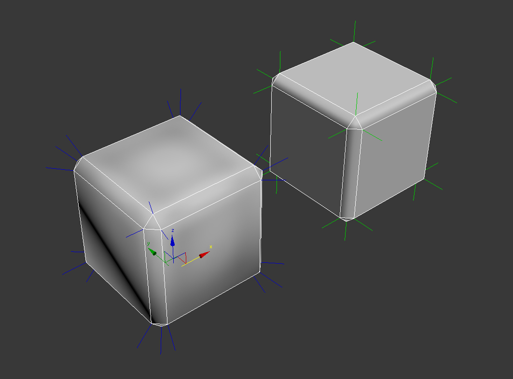
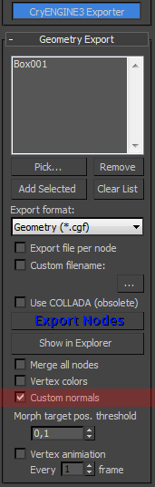

Обзор
Пользовательские нормали — хороший способ контролировать сглаживание вашей lowpoly и/или обойти необходимость использования карты нормалей, что приводит к меньшему объему памяти текстур и более детализированному сглаживанию, поскольку оно не зависит от разрешения карты нормалей.
В этом примере я хочу использовать одну группу сглаживания, но при этом сглаженными будут только скошенные края куба. Левый куб использует стандартные нормали, правый — пользовательские.

Чтобы настроить нормали, просто используйте модификатор «Редактировать нормали»:

Самый простой способ получить упомянутый выше результат — выбрать «Грань», а затем усреднить все грани, которые не принадлежат фаске. В данном случае это будут 6 сторон куба.

Теперь вдоль этих граней нет нежелательного градиента сглаживания, поскольку все их вершины имеют одну и ту же нормаль. Однако фаска выглядит гладкой.
Чтобы экспортировать свой ресурс с пользовательскими нормалями, просто установите соответствующий флажок в окне экспорта:
